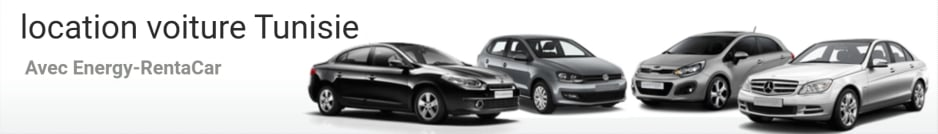

Location voiture tunisie
Grace à Notre siteRentaCar vous allez en quelques clics réserver une voiture de location.
Bien évidemment nous vous proposons un service haut de gamme.
Trouver des offres spéciales et profitez des promotions.
Notre site Energy-RentaCar met à votre disposition un service haut de gamme qui vous permettra de choisir
et louer la voiture qui vous convient en un seul clic.
Nous vous offrons Une grande variété de véhicules afin de vous satisfaire et répondre à tous vos besoins et quelque soit votre besoin :
petite ou grande, pour usage quotidien ou touristique...
Pour réserver une voiture de location à Tunis, Sousse, Tabarka, Hammamet, Aeroport Monastir ou enfidha; n’hésitez pas de demander un devis gratuit en ligne,
Energy-RentaCar peut vous apporter une réponse réactive,
professionnelle et de qualité.
Avec un parc composé de voitures berlines, de véhicules familiaux à 7 places et des voitures tout terrain 4X4,
l’agence de location de véhicules en tunisie Energy-RentaCar peut rallier toute la tunisie du Nord au Sud.
Pour une courte ou une longue durée Energy-RentaCar vous propose des tarifs de location incomparables et des services professionnels.
Profitez des meilleures vacances en Tunisie aux meilleurs prix.
Pour plus d'informations sur nos offres promotionnelles de location voiture à Tunis, contactez-nous : contact@energy-rentacar.com
Tel
+216 71 236 937 / +216 71 755 566
+216 98 459 552 / +216 92 108 235
Email
rentcar@energy-rentacar.com
imen.rentcar@energy-rentacar.com
Adresse
Bloc 65, Rue Abderrahmen Ibn Aouf - El Menzah 6 - Tunis - Tunisie